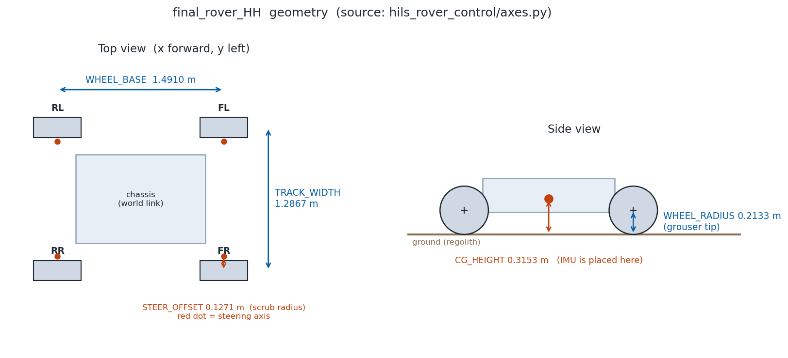
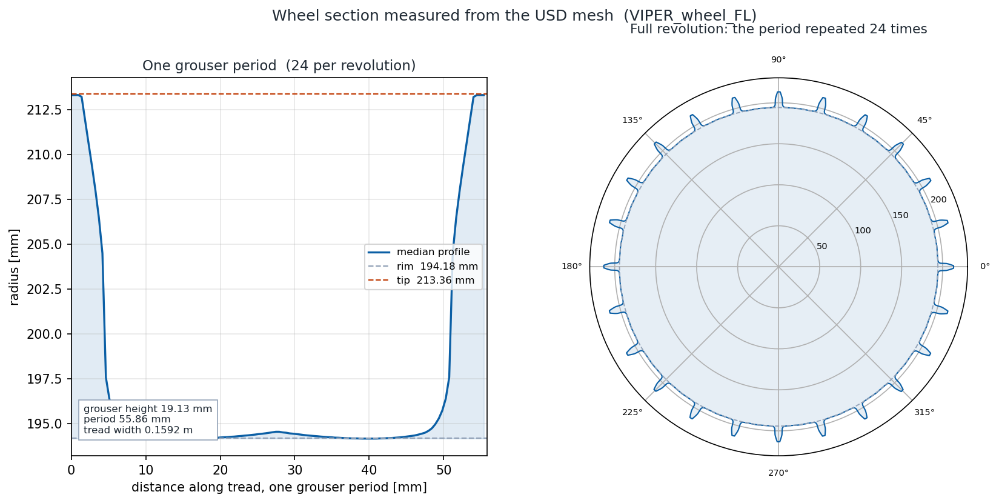
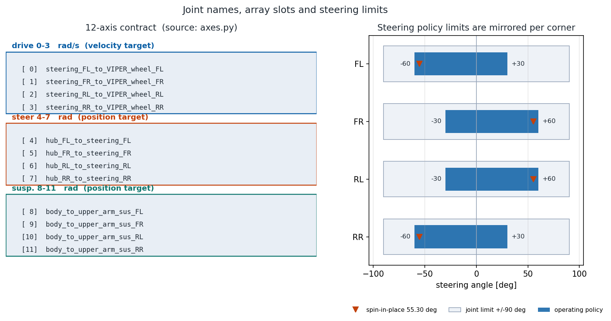

달 탐사 로버 USD 자산 설명서¶
기술 문서 · 현대자동차 L-Project · 기준일 2026-09-29 (최초 2026-09-22)
요약
달 탐사 로버 HILS의 플랜트(NVIDIA Isaac Sim + OmniLRS)에서 로버는 USD 자산으로 들어갑니다. 이 문서는 그 자산이 무엇으로 이루어져 있고, 어떤 값이 어디서 정해지는지를 정리한 것입니다.
가장 중요한 사실부터 적습니다 — USD 파일 하나를 열어 보아도 실행 시 거동을 알 수 없습니다. 설정이 네 층에 나뉘어 있고 층마다 소유자가 다르기 때문입니다. 같은 값이 두 층에 적히면 조용히 어긋나므로, 각 항목의 정본이 어디인지를 먼저 정해 두었습니다.
- 자산 파일은 링크·조인트·메시·센서 배치·Action Graph를 갖습니다.
- 물리 설정(중력·질량·구동 드라이브)은 별도 파일에 있고 자산에 써넣습니다 — 자산을 다시 만들면 사라지므로 재적용해야 합니다.
- 마찰과 장면(지형·변형·암석)은 자산을 고치지 않고 런타임에 붙입니다.
- 도식의 숫자는 전부 계약 정본과 자산 실측에서 스크립트가 직접 읽어 그립니다. 문서에 손으로 옮겨 적지 않습니다.
1. 자산 구조¶
World0.usd defaultPrim /World · Z-up · metersPerUnit 1.0
└ /World/Rover_hyundai ← SubUSDs/Rover_hyundai.usd 참조
└ world ← ArticulationRoot
├ IMU_sensor/…/Imu_Sensor IsaacImuSensor
└ stereo_camera/… Camera
SubUSDs/ Rover_hyundai{,_base,_physics,_robot,_sensor}.usd · IMU_sensor.usd · stereo_camera.usd
가동 조인트는 24개(전부 revolute) 이고 그중 20개가 드라이브를 갖습니다.
아티큘레이션 루트 링크의 이름은 world 입니다.
시뮬레이터(OmniLRS)에 넣을 때는 생성기가 World0.usd 에서
Rover_hyundai_omnilrs.usd 를 만듭니다. 자산 원본은 고치지 않고 참조 위에
필요한 것만 덮어씁니다 — 자산 저장소는 대용량이라 되돌리기가 비싸고, 여기서 고치면
생성할 때마다 따라오기 때문입니다.
2. 설정은 네 층에 나뉘어 있다¶
| 층 | 무엇을 정하는가 | 적용 시점 |
|---|---|---|
| ① 자산 USD | 링크·조인트·메시·센서 배치·Action Graph | 생성 시 고정 |
| ② 물리 | 중력·질량·관성·구동 드라이브 | 자산 파일에 써넣음 |
| ③ 마찰 | 접촉 재질과 바인딩 대상 | 런타임 |
| ④ 장면 | 지형·로봇 배치·변형·자국·암석 | 런타임 |
②만 자산을 고칩니다. ③④는 고치지 않고 열린 스테이지에 붙입니다 — 지형은 절차 생성이라 파일에 미리 넣을 수 없고, 마찰은 지형 프림이 재생성되므로 런타임에 붙여야 살아남습니다.
3. 제원¶

| 항목 | 값 | 비고 |
|---|---|---|
| 휠 반경 | 0.2133 m | 그라우저 팁 기준 |
| 트레드(좌우 휠 중심 간) | 1.2867 m | |
| 축거(전후 휠 중심 간) | 1.4910 m | |
| 스크럽 반경(조향축 오프셋) | 0.1271 m | 바깥쪽이 + |
| 무게중심 높이 | 0.3153 m | 접지면 기준. IMU를 여기에 둡니다 |
| 총질량 | 450.0 kg | 링크별 배분은 6절 |
스크럽 반경이 0이 아닙니다. 휠 접지점이 조향축보다 바깥에 있어, 조향하면 휠이 그 둘레로 돕니다. 4WS 역기구학에서 조향각은 조향축 위치에서 구하고 휠 속도는 돌아간 휠 접지점에서 다시 구해야 합니다 — 선회 시 조향각 최대 8.2°, 휠 속도 9.3 % 차이를 만듭니다.
IMU를 무게중심에 둔 이유는 팔길이 항 때문입니다. 원래 자산은 IMU가 지붕(접지면 위 0.579 m)에 있었는데, 거기서 재면 차체 각가속도가 섞여 들어와 순수한 차체 가속도가 아니게 됩니다. 무게중심에 두면 그 항이 사라집니다.
4. 휠 단면 — 자산 메시에서 직접 잰 값¶

| 항목 | 값 |
|---|---|
| 그라우저 팁 반경 | 213.36 mm |
| 림 반경 | 194.18 mm |
| 그라우저 높이 | 19.13 mm |
| 그라우저 수 | 24 |
| 자국 주기 | 55.86 mm |
| 트레드 폭 | 0.1592 m |
왼쪽은 그라우저 한 주기를 펼친 것이고, 오른쪽은 그 주기를 24번 이어 붙여 한 바퀴를 만든 것입니다. 고해상도 바퀴 자국은 이 단면을 회전 위상에 맞춰 지형에 찍어 만듭니다.
정점만 보면 틀립니다
넓은 평면은 모서리에만 정점이 있어 가운데 축방향 칸이 비고, 정점 최대 반경으로 잡으면 그라우저 높이가 90 mm처럼 엉뚱하게 나옵니다. 그래서 바깥 삼각형 내부를 무작위로 채워 표본을 늘린 뒤 칸마다 최대 반경을 취합니다. 차축도 하드코딩하지 않고 바운딩 박스가 가장 얇은 축으로 찾습니다.
참조 제원과 섞지 마십시오
질량 배분의 근거로 쓴 NASA VIPER 공개 제원에는 그라우저 높이가 26 mm로 적혀 있습니다. 그것은 참조값이고, 우리 휠의 실측은 19.13 mm입니다.
5. 12축 계약¶

12축 배열은 구동 4 + 조향 4 + 서스펜션 4 이고, 조인트 이름과 배열 위치가 계약으로 고정되어 있습니다. 상위(제어기)와 하위(보드·시뮬레이터)가 같은 이름을 써야 하며, 이름이 어긋나면 오류 없이 그 축만 조용히 죽습니다.
조향 한계는 두 겹입니다.
- 자산 조인트 한계 ±90° — 바깥 울타리입니다.
- 운용 정책 −30°~+60°, 코너별 거울 — FL·RR은 −60°~+30°, FR·RL은 −30°~+60°.
둘은 다른 종류의 값이므로 하나로 합치지 않습니다. 제자리 회전에 필요한 각은 55.30° 인데, 이것은 킹핀(조향축) 기준이며 휠 위치 기준의 기하값 49.21°가 아닙니다 — 스크럽 반경이 0이 아니기 때문입니다.
서스펜션 조인트 한계는 ±0.35 rad(±20.05°), 구동 휠 각속도 한계는 10.0 rad/s 입니다.
6. 물리 — 중력·질량·구동 드라이브¶
| 항목 | 값 | 근거 |
|---|---|---|
| 중력 | 1.62 m/s², −Z | 달. 자산 값이 센티널이라 PhysX가 지구 9.81을 쓰고 있었습니다 |
| 관성 텐서 | 자동 계산 | (0,0,0)이 UsdPhysics의 자동 계산 표식입니다 |
| 무게중심 | 자동 계산 | (-inf,-inf,-inf)가 자동 계산 표식입니다 |
| 차체 | 302.0 kg | 섀시·전장·페이로드 일체 |
| 휠 ×4 | 12.0 kg | 전금속 그라우저 휠 + 구동 액추에이터 |
| 조향 너클 ×4 | 6.0 kg | |
| 허브 ×4 | 5.0 kg | |
| 상부 서스펜션 암 ×4 | 8.0 kg | |
| 하부 서스펜션 암 ×4 | 6.0 kg | 4절 링크 종동 |
| 구동 드라이브 stiffness | 0.0 | 위치 스프링 제거 |
센티널을 값으로 읽으면 안 됩니다
자산이 원래 들고 있던 값은 전부 플레이스홀더였습니다 — 21개 강체 전부 1~2 kg,
관성 (1e-4, 1e-4, 1e-4). 이 상태에서는 아티큘레이션 솔버가 성립하지 않아 구동축이
아예 돌지 않았습니다.
더 고약한 것은 자동 계산 표식을 값으로 착각한 경우입니다. -inf나 (0,0,0)은
「무시하고 형상에서 계산하라」는 뜻인데, 플레이스홀더 1e-4가 그 자동 계산을 막고
있었습니다. 중력도 같은 이유로 지구값이 쓰이고 있었습니다.
자동 계산으로 얻은 휠 축방향 관성은 0.403 kg·m² 로, 속찬 원판(0.272)과 얇은 금속 드럼(0.544) 사이에 들어옵니다 — 타당한 값입니다.
구동 stiffness를 0으로 둔 이유는 속도 지령과 싸우지 않기 위해서입니다. 자산은 10이었고, PhysX에서는 180/π가 곱해져 kp 572.96 으로 들어갑니다. 감쇠 20은 속도 추종용이므로 그대로 둡니다.
드라이브 게인 (2026-09-29 실측)¶
드라이브를 가진 조인트는 12개이며 전부 회전축입니다.
| 축 | stiffness | damping | maxForce | 목표 |
|---|---|---|---|---|
| 구동 ×4 | 0.0 | 20.0 | FL 1.0e6 · 나머지 1.0e14 | 속도 |
| 조향 ×4 | 50.0 | 20.0 | FL 1.0e4 · 나머지 1.0e5 | 위치 |
| 서스펜션 ×4 | 50.0 | 20.0 | 1.0e3 (네 축 동일) | 위치 |
USD 값과 물리 엔진 값은 다릅니다
회전 드라이브는 물리 엔진으로 들어갈 때 180/π가 곱해집니다. stiffness 50은 kp 2864.79, damping 20은 kd 1145.92 가 됩니다. USD에 적힌 숫자를 그대로 게인으로 읽으면 안 됩니다.
stiffness와 damping은 무엇인가¶
조인트마다 붙는 PD 제어기의 두 이득입니다. 매 물리 스텝에 이 토크를 만들어
maxForce로 자릅니다.
| 항목 | 뜻 | 단위(회전축) |
|---|---|---|
| stiffness | 위치 이득 — 목표 각과의 오차에 비례해 미는 세기 | N·m/deg(USD) → N·m/rad(엔진) |
| damping | 속도 이득 — 목표 각속도와의 오차에 비례해 미는 세기 | N·m/(deg/s) → N·m/(rad/s) |
| maxForce | 위 토크의 포화 한계 | N·m |
세 축군이 같은 수식을 쓰는데 거동이 다른 이유는 stiffness를 0으로 두느냐입니다.
- 구동축은 stiffness가 0이라 위치 항이 사라집니다 →
τ = damping × (목표속도 − 현재속도). 즉 damping이 곧 속도 루프 이득입니다. stiffness를 0이 아니게 두면 위치 항이 되살아나 속도 지령과 싸웁니다 — 자산의 목표 위치가 0으로 남아 있어 휠을 0도로 끌어당겼던 것이 앞서 말한 결함입니다. - 조향·서스펜션은 위치 드라이브라 두 항이 다 삽니다. stiffness가 목표 각을 붙잡는 세기, damping이 진동을 죽이는 세기입니다.
이득비가 시간 상수입니다. damping / stiffness = 20/50 = 0.400초 — 단위에 무관하게
정해지며, 관성이 작을수록 이 값이 응답을 지배합니다.
감쇠비는 계산하지 않았습니다
관성 텐서를 자동 계산으로 두었기 때문에(6절) 파일에서 읽을 수 없습니다.
축군별 주요 인자 — 값이 무엇을 좌우하는가¶
기준값: 코너 하중 182.25 N(= 450 kg × 1.62 ÷ 4) · 정지 마찰 0.90 · 휠 반경 0.2133 m · 스크럽 반경 0.1271 m · 서스펜션 레버 암 0.4908 m.
| 축군 | 지배 인자 | 근거 수치 |
|---|---|---|
| 구동 | damping이 속도 루프 이득. 휠 관성 0.403 kg·m²와 함께 시정수를 정합니다 | 0.352 ms — 사실상 즉시 추종 |
| maxForce는 견인 한계보다 한참 위라 걸리지 않습니다 | 견인 한계 35.0 N·m, FL 기준 28,582배 여유 | |
| 조향 | stiffness가 목표 각 유지력, damping이 진동 억제 | kp 2864.79 · kd 1145.92 |
| maxForce는 FL만 10배 낮지만 여유는 큽니다 | 조향 저항 약 20.8 N·m, FL 기준 480배 여유 | |
| 서스펜션 | 셋 중 여유가 가장 작습니다. 자중을 실제로 떠받치는 축입니다 | 상부 암 토크 50.3 N·m, maxForce 1.0e3 → 19.9배 |
읽을 점 셋.
- 구동축은 게인이 아니라 지령이 거동을 정합니다. 시정수가 0.35 ms라 보드가 보낸 속도를 거의 그대로 냅니다 — 플랜트 게인을 의심하기 전에 지령 경로를 먼저 봅니다.
- FL의 낮은 maxForce는 지금 조건에서 걸리지 않습니다(480배 여유). 다만 하중이나 마찰을 크게 올리는 시험에서는 이 여유가 줄어듭니다.
- 서스펜션 여유 19.9배가 가장 빠듯합니다. 착지 충격이나 경사 주행처럼 코너 하중이 몇 배로 뛰면 이 한계가 먼저 닿습니다. 페이로드가 늘면 가장 먼저 다시 볼 값입니다.
조향 저항 토크는 자릿수 추정입니다
마찰 × 하중 × 스크럽 반경으로 잡은 값이며, 실제로는 보어 마찰과 정지 시 비틀림이
더해져 이보다 큽니다. 정밀한 값이 필요하면 실측해야 합니다.
FL 코너만 maxForce가 다릅니다
조향은 10배(1.0e4 대 1.0e5), 구동은 1e8배(1.0e6 대 1.0e14) 차이입니다. 자산을 코너별로 저작하면서 FL만 다른 기본값이 남은 것으로 보입니다.
지금 거동에 드러나지는 않을 것으로 봅니다 — 우리 하중에서 필요한 조향 토크는 1.0e4보다 한참 작습니다. 다만 근거 없이 비대칭인 상태이므로 기록해 둡니다.
질량은 실측이 아닙니다
총질량은 NASA VIPER 공개 제원(surface operations mass 450 kg)을 따르고, 링크별 배분은 이동계 질량 분율(행성 탐사 로버 통상 25~35 %, 여기서는 33 %)을 근거로 나눈 추정치입니다. 기구팀 실측이 오면 설정 파일만 갈아끼우고 다시 적용합니다.
7. 마찰 — 값보다 바인딩 위치가 함정입니다¶
| 항목 | 값 | 근거 |
|---|---|---|
| 정지 마찰 | 0.90 | tan(42°) — 월면토 첨두 전단강도 |
| 운동 마찰 | 0.70 | tan(35°) — 잔류/한계상태 |
| 반발계수 | 0.0 | 월면토는 거의 완전 비탄성입니다 |
Apollo 토질 시험의 내부 마찰각(30~50°, 대표 42°)에서 왔습니다. 그라우저는 금속–토양 계면이 아니라 토양 내부에서 전단되므로 유효 계수가 tan(φ)에 가까워집니다.
재질을 로버 밖에 두면 조용히 끊깁니다
시뮬레이터는 로버를 서브트리만 참조합니다. 공용 재질을 그 밖에 두면 합성된 장면에서 존재하지 않는 경로를 가리키고, 그러면 물리 엔진 기본값으로 되돌아갑니다. 증상은 「마찰을 바인딩했는데 아무 변화가 없다」로 나타납니다. 그래서 휠은 자기 링크 안의 재질을 씁니다.
지형도 메시가 아니라 부모 Xform에 붙입니다. 지형을 재생성할 때 메시 프림이 삭제·재생성되는데, 부모에 붙이면 상속으로 살아남기 때문입니다.
적용했지만 슬립은 변하지 않았습니다
같은 조건에서 0.50/0.50과 0.90/0.70을 비교했더니 슬립이 49.0 % · 49.1 %로
소수점까지 같았습니다. 마찰을 80 % 올렸는데 변화가 없다는 것은, 그 49 %가 견인
한계로 생긴 값이 아니라는 뜻입니다. 값을 유지하는 이유는 근거 없는 기본값 대신
출처가 적힌 값을 쓰기 위해서입니다.
8. 지형 변형과 바퀴 자국¶
두 방식이 있고 동시에 쓰이지 않습니다.
- DEM 변형 — 0.05 m 격자 지형을 직접 눌러 자국을 만듭니다.
- 고해상도 자국(track tiles) — 휠 근처를 1 m 타일(표본 간격 1.49 cm)로 덮고 4절의 실측 휠 단면을 회전 위상에 맞춰 찍습니다. 켜면 DEM 변형 쪽 값은 쓰이지 않습니다. 렌더 전용이며 충돌 메시는 바뀌지 않습니다.
충돌 메시를 다시 구우면 물리 스텝이 통째로 멈추기 때문에 렌더 전용으로 분리했습니다.
자국 깊이는 하중에 W^(2/3) 로 비례시킵니다(강체륜 Bekker 침하). 하중은 서스펜션 조인트 토크에서 환산하는데, 상부 암 토크만으로는 원리적으로 전체 하중을 볼 수 없습니다 — 서스펜션이 4절 평행링크라 하부 암이 2력 부재로 큰 힘을 나르면서도 자기 축 토크는 0이기 때문입니다. 그래서 실측 교정 계수 1.78을 곱하며, 산포가 ±18 % 라는 것을 함께 적어 둡니다.
9. 암석 충돌 — 콜라이더는 있었는데 통과했습니다¶
로버가 월석을 그대로 통과했습니다. 원인은 콜라이더가 없어서가 아니었습니다.
암석 자산에는 콜라이더가 처음부터 있었습니다(메시에 CollisionAPI + MeshCollisionAPI,
충돌 활성화됨). 막고 있던 것은 인스턴싱 방식이었습니다 — PointInstancer 로 뿌리면
그 콜라이더가 물리에 반영되지 않습니다. 인스턴서를 실제 프림을 만드는 방식으로 바꾸니
자산의 콜라이더가 그대로 살아났습니다.
판정은 눈으로 하지 않고 이론 거리와의 비로 했습니다(구동 지령 각속도 × 휠 반경 × 시뮬레이션 시간).
| 인스턴싱 방식 | 이론 거리 대비 | 판정 |
|---|---|---|
| PointInstancer | 0.84 | 자유주행 — 통과 |
| 실제 프림 | 0.55 · 0.70 · 0.09 | 막혔다(지령 2.339 rad/s에 3 cm) |
성능 대가는 RTF 0.4993 → 0.4953(0.8 %) 뿐이었고 물리 멈춤도 없었습니다.
「기능을 켰다」와 「효과가 생겼다」는 다릅니다
이 문제를 풀면서 한 번 틀린 길로 갔습니다. 소스 코드에서 콜라이더를 붙이는 호출을 전수 조사해 0건이 나오자 「콜라이더가 없다」고 결론 내고, 붙이는 수정을 만들어 적용했습니다. 그래도 로버는 통과했습니다.
콜라이더는 코드가 아니라 자산에 들어 있었습니다. 호출처 전수 조사는 자산을 열어 보는 일을 대신하지 못합니다 — 설정이 네 층인데 코드 층만 훑은 셈입니다.
그리고 그 수정을 A/B로 재니 성능 대가가 0이었는데, 그것을 「비용 없이 잘 붙었다」로 읽었습니다. 실제로는 의미 있는 것이 더해지지 않았다는 신호였습니다.
10. 자산을 다시 만들 때¶
생성기가 하는 일은 아홉 가지입니다 — 기본 프림 지정, 단위·상향축 복사, 로버 참조, Action Graph 5종 복사, 경로 치환, 센서 배치, 루프 폐쇄 조인트 교정, 카메라 해상도, 지상 진실 오도메트리 그래프 생성.
그래프는 새로 짜지 않고 복사합니다. 이전에 바로잡은 배선 14건을 다시 만들 이유가 없고, 다시 만들면 같은 결함을 재현할 위험이 있기 때문입니다.
만들었다고 믿지 않고 다시 열어서 확인합니다. 생성 후 11개 항목을 검산하며, 하나라도 실패하면 오류로 끝냅니다 — 후방 카메라가 존재하는지, 전후 카메라의 앞뒤 부호가 반대인지, 높이가 같은지, 시선이 반대인지, IMU가 무게중심 높이·중심선 위에 있는지, 그래프가 후방 카메라를 보고 있는지, 토픽이 전방과 겹치지 않는지, 루프 폐쇄 조인트가 전부 강체를 잡는지.
자산을 다시 만들면 함께 해야 하는 일이 있습니다.
- 물리 설정 재적용 — 자산 파일에 써넣는 값이라 재생성하면 사라집니다.
- 휠 단면 재추출 — 4절의 값은 자산 메시에서 뽑은 것입니다.
- 서스펜션 레버 암 재계산과 하중 계수 재교정(산포도 함께 기록).
- 제원을 다시 재어 12축 계약과 대조.
11. 확인되지 않은 것¶
PG-001 작성 규칙에 따라, 확인하지 못한 것을 줄이지 않고 그대로 적습니다.
- FL 코너의
maxForce가 다른 이유를 모릅니다(6절). 거동에 드러나지 않을 것으로 보지만 근거가 없는 비대칭이고, 맞출지 여부를 정하지 못했습니다. - 카메라 수직 시야각이 확정되지 않았습니다. 수평은 자산에서 계산됩니다(108.05°). 수직은 조리개 비(3.27:1)와 렌더 해상도(1.78:1)가 서로 맞지 않아 렌더러의 조리개 정합 정책에 달려 있는데, 그 정책을 확인하지 못했습니다. 채택 해상도도 아직 정하지 않았습니다 — 1280×720에서 수신 22.3 Hz, 640×360에서 29.3 Hz로 측정만 해 두었습니다.
- 카메라가 아래로 기울어져 있는데 그 각도가 기록되어 있지 않습니다. 전후 카메라의 시선 내적이 −0.747로, 순수한 ±x 방향이 아닙니다.
- 질량·관성은 실측이 아니라 참조 제원 기반 추정치입니다(6절).
- 견인 솔버는 꺼져 있습니다. 계수의 출처가 없어 켜지 않았습니다.
- 암석 콜라이더가
PointInstancer에서 반영되지 않는 이유를 증명하지 못했습니다. 물리 확장이 해당 방식을 입자 집합에만 참조한다는 것까지 확인했고, 실기 A/B로 현상은 확정했지만 내부 동작은 확인하지 못했습니다. - 상수가 여러 곳에 중복 정의되어 있습니다. 무게중심 높이와 휠 반경이 계약 파일과 생성기에 각각 적혀 있습니다. 이 문서의 도식을 그리는 스크립트는 그 중복을 만들지 않고 계약 파일에서 직접 읽습니다.
관련 문서
- 프로젝트 요약 · 중간 보고
- 지형 변형 엔진 정밀 분석 — 8절의 자국 생성 상세
- 차년도 과제 제안 — 견인 모델 고도화